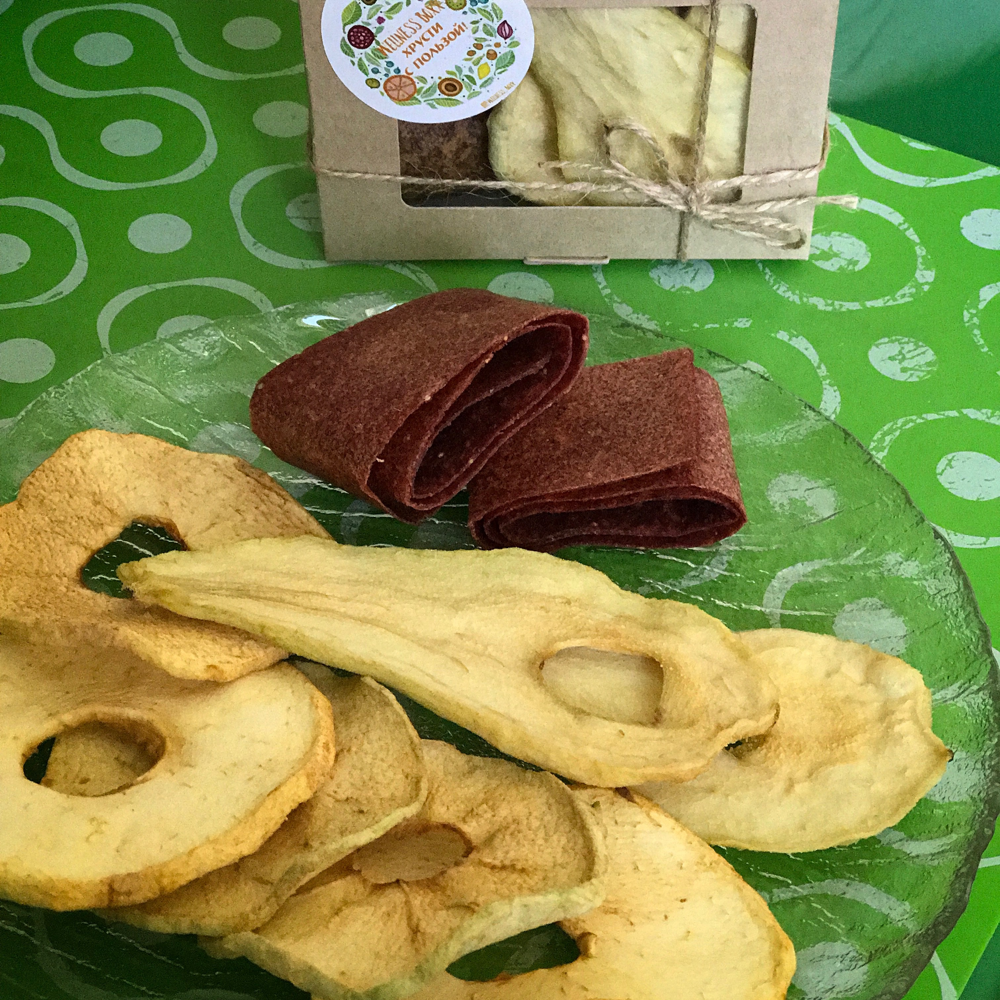

Груша. Полезные свойства.
Груша богата полезными веществами, она содержит арбутин и пектин, фолиевую кислоту, бета-каротин, витамины А, В1, В2, В5, В6, В9, С, Е, К, Н и РР, а также нужные организму человека минералы: калий, кальций, магний, цинк, селен, медь и марганец, железо, сера, йод, фтор, фосфор и натрий. Груши также способны также повышать сопротивляемость организма болезнетворным бактериям и вирусам.
Диетический низкокалорийный продукт в 100 г которого содержится всего 47 ккал..